Imagen del final: dos variantes
Propuesta sin aprobar; nada está en assets/. Los montajes «con franja» son del script montar.py (no capturas del motor: fuente y botones aproximados) y replican la franja de EpilogueScreen: 230 px de 720, 78 % de opacidad, la frase en tres líneas y los botones «Créditos» y «Niveles».
1 · Arte vigente (para juzgar coherencia)
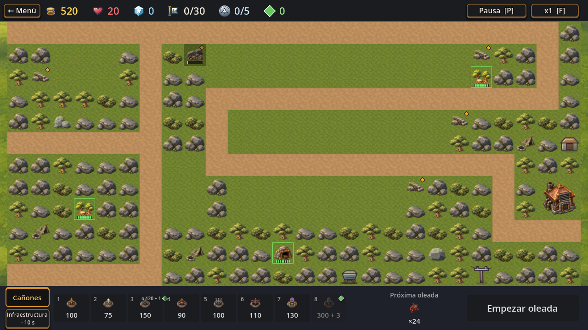
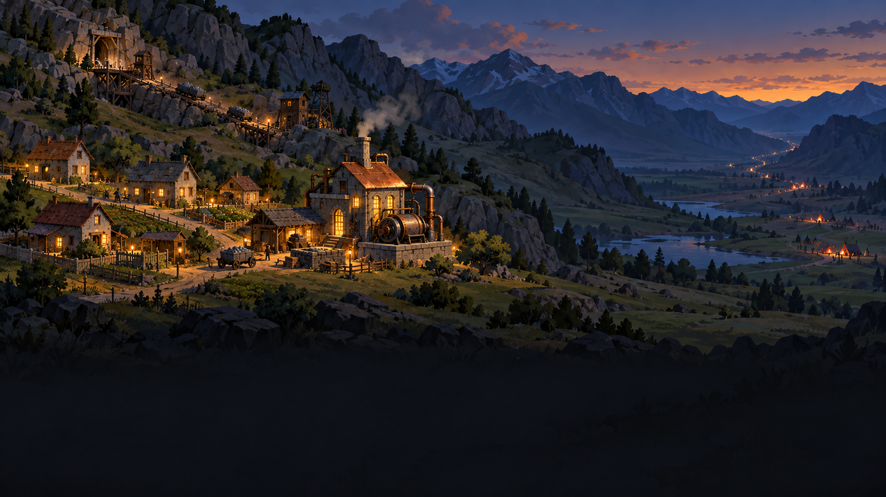
2 · Variante luminosa (todo en 3 estrellas)
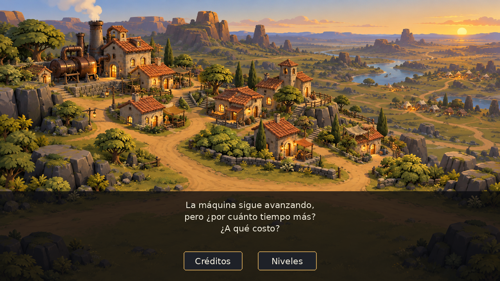
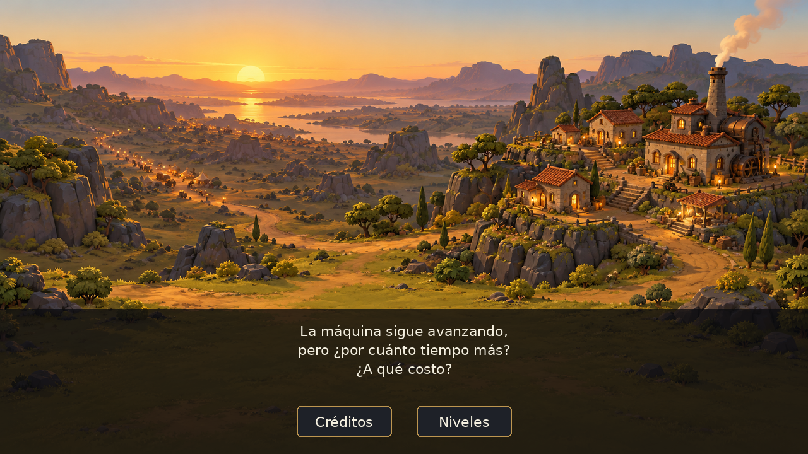
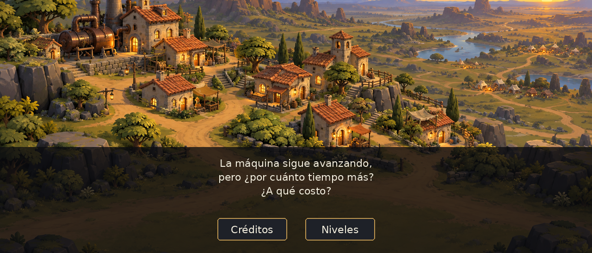
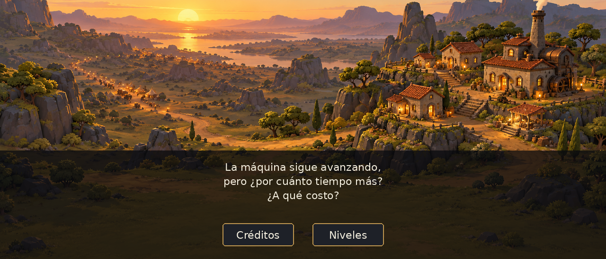
3 · Variante oscura (cualquier otro caso): tormenta lejana ambigua
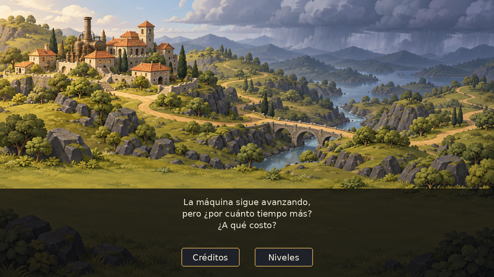
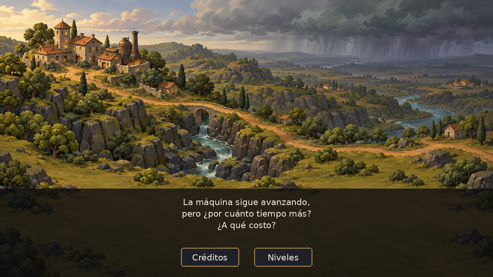
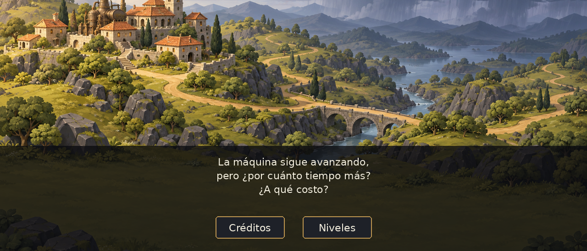
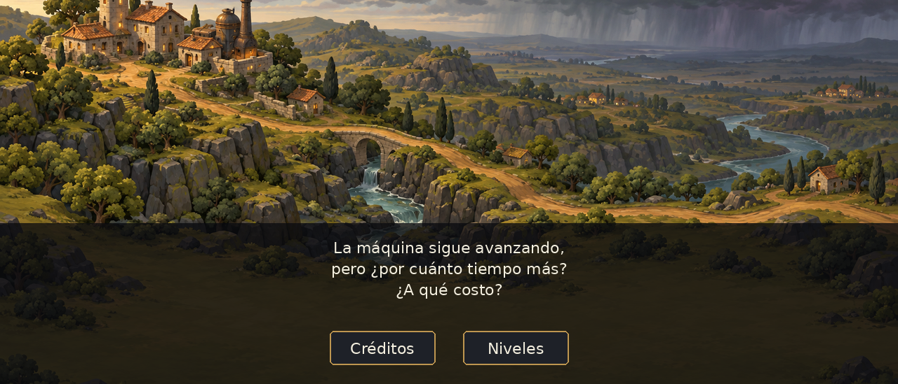
4 · Sin la franja (1920×1080)
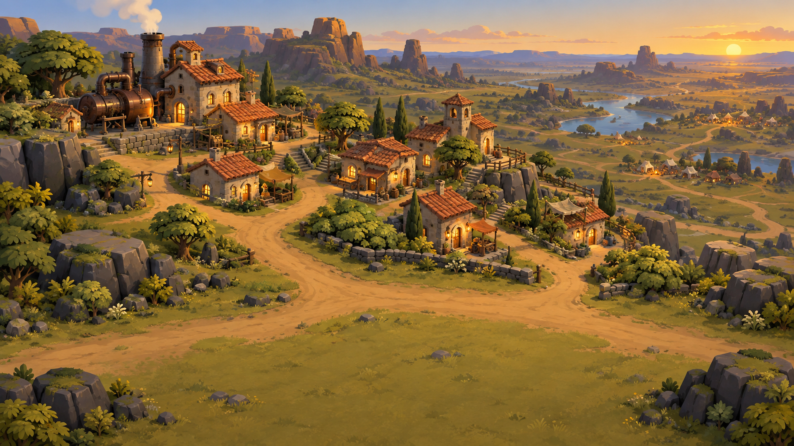
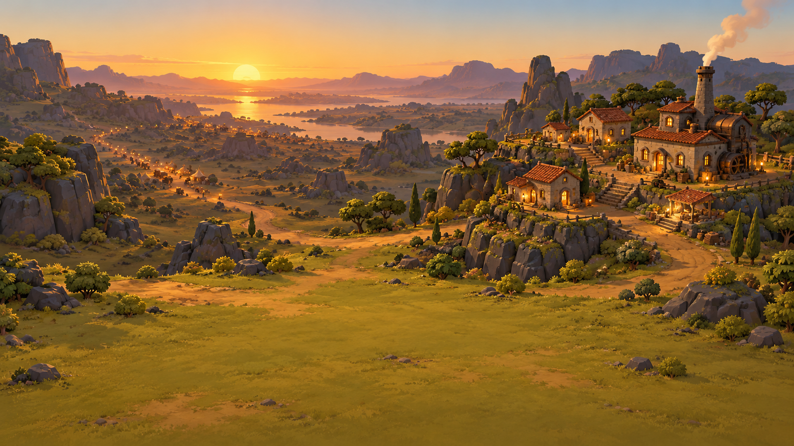
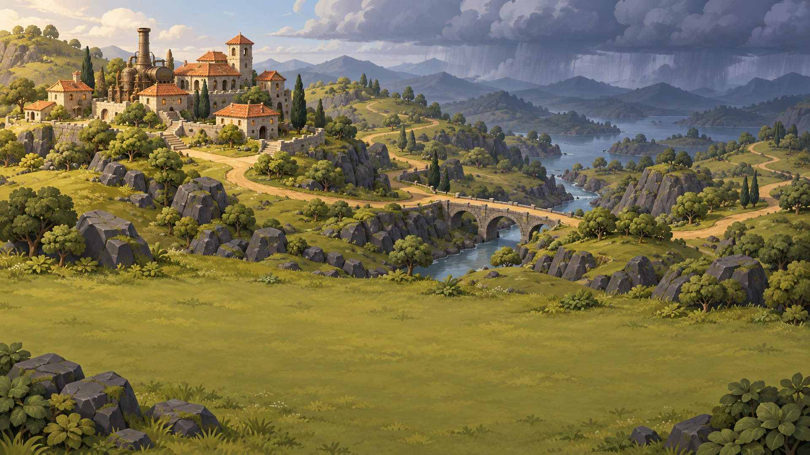
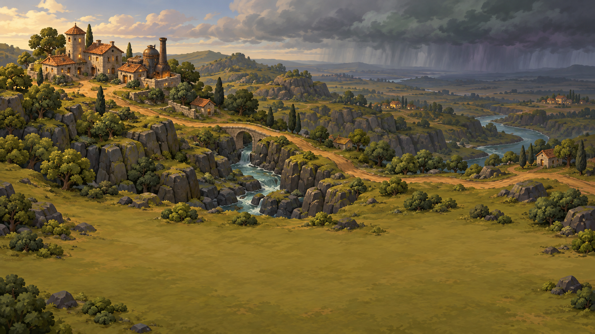
Observaciones honestas: (a) las cuatro tienen más paisaje y detalle que cualquier recurso del mapa (lago, puente, montañas); copian bien rocas, árboles, pasto y camino, pero no son idénticas a la familia; (b) no son «la misma escena» pixel a pixel (el generador no lo permite); (c) en la oscura no hay fuegos: las rondas donde aparecieron salieron como incendios y se descartaron (README, prompts y rondas); (d) 1920×1080 es una ampliación del 15 % de la salida de 1672×941.